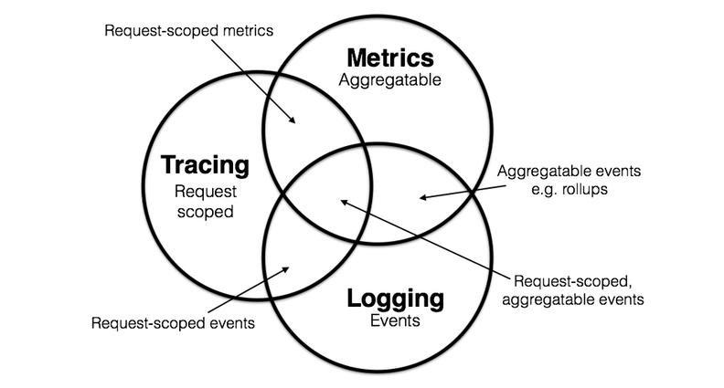
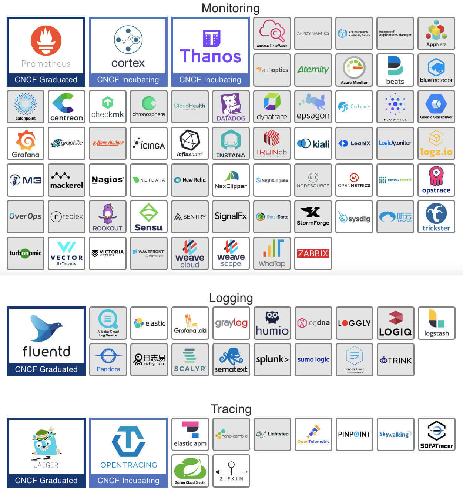

- 00 _导读 _ 什么是“The Fenix Project”？.md
- 00 开篇词 _ 如何构建一个可靠的分布式系统？.md
- 01 _ 原始分布式时代：Unix设计哲学下的服务探索.md
- 02 _ 单体系统时代：应用最广泛的架构风格.md
- 03 _ SOA时代：成功理论与失败实践.md
- 04 _ 微服务时代：SOA的革命者.md
- 05 _ 后微服务时代：跨越软件与硬件之间的界限.md
- 06 _ 无服务时代：“不分布式”云端系统的起点.md
- 07 _ 远程服务调用（上）：从本地方法到远程方法的桥梁.md
- 08 _ 远程服务调用（下）：如何选择适合自己的RPC框架？.md
- 09 _ RESTful服务（上）：从面向过程编程到面向资源编程.md
- 10 _ RESTful服务（下）：如何评价服务是否RESTful？.md
- 11 _ 本地事务如何实现原子性和持久性？.md
- 12 _ 本地事务如何实现隔离性？.md
- 13 _ 全局事务和共享事务是如何实现的？.md
- 14 _ 分布式事务之可靠消息队列.md
- 15 _ 分布式事务之TCC与SAGA.md
- 16 _ 域名解析系统，优化HTTP性能的第一步.md
- 17 _ 客户端缓存是如何帮助服务器分担流量的？.md
- 18 _ 传输链路，优化HTTP传输速度的小技巧.md
- 19 _ 如何利用内容分发网络来提高网络性能？.md
- 20 _ 常见的四层负载均衡的工作模式是怎样的？.md
- 21 _ 服务端缓存的三种属性.md
- 22 _ 分布式缓存如何与本地缓存配合，提高系统性能？.md
- 23 _ 认证：系统如何正确分辨操作用户的真实身份？.md
- 24 _ 授权（上）：系统如何确保授权的过程可靠？.md
- 25 _ 授权（下）：系统如何确保授权的结果可控？.md
- 26 _ 凭证：系统如何保证与用户之间的承诺是准确完整且不可抵赖的？.md
- 27 _ 保密：系统如何保证敏感数据无法被内外部人员窃取滥用？.md
- 28 _ 传输（上）：传输安全的基础，摘要、加密与签名.md
- 29 _ 传输（下）：数字证书与传输安全层.md
- 30 _ 验证：系统如何确保提交给服务的数据是安全的？.md
- 31 _ 分布式共识（上）：想用好分布式框架，先学会Paxos算法吧.md
- 32 _ 分布式共识（下）：Multi Paxos、Raft与Gossip，分布式领域的基石.md
- 33 _ 服务发现如何做到持续维护服务地址在动态运维中的时效性？.md
- 34 _ 路由凭什么作为微服务网关的基础职能？.md
- 35 _ 如何在客户端实现服务的负载均衡？.md
- 36 _ 面对程序故障，我们该做些什么？.md
- 37 _ 要实现某种容错策略，我们该怎么做？.md
- 38 _ 限流的目标与模式.md
- 39 _ 如何构建零信任网络安全？.md
- 40 _ 如何实现零信任网络下安全的服务访问？.md
- 41 _ 分布式架构中的可观测到底说的是什么？.md
- 42 _ 分析日志真的没那么简单.md
- 43 _ 一个完整的分布式追踪系统是什么样子的？.md
- 44 _ 聚合度量能给我们解决什么问题？.md
- 45 _ 模块导学：从微服务到云原生.md
- 46 _ 容器的崛起（上）：文件、访问、资源的隔离.md
- 47 _ 容器的崛起（下）：系统、应用、集群的封装.md
- 48 _ 以容器构建系统（上）：隔离与协作.md
- 49 _ 以容器构建系统（下）：韧性与弹性.md
- 50 _ 应用为中心的封装（上）：Kustomize与Helm.md
- 51 _ 应用为中心的封装（下）：Operator与OAM.md
- 52 _ Linux网络虚拟化（上）：信息是如何通过网络传输被另一个程序接收到的？.md
- 53 _ Linux网络虚拟化（下）：Docker所提供的容器通讯方案有哪些？.md
- 54 _ 容器网络与生态：与CNM竞争过后的CNI下的网络插件生态.md
- 55 _ 谈谈Kubernetes的存储设计理念.md
- 56 _ Kubernetes存储扩展架构：一个真实的存储系统如何接入或移除新存储设备？.md
- 57 _ Kubernetes存储生态系统：几种有代表性的CSI存储插件的实现.md
- 58 _ Kubernetes的资源模型与调度器设计.md
- 59 _ 透明通讯的涅槃（上）：通讯的成本.md
- 60 _ 透明通讯的涅槃（下）：控制平面与数据平面.md
- 61 _ 服务网格与生态：聊聊服务网格的两项标准规范.md
- 63 _ 基于Spring Boot的单体架构.md
- 64 _ 基于Spring Cloud的微服务架构.md
- 65 _ 基于Kubernetes的微服务架构.md
- 66 _ 基于Istio的服务网格架构.md
- 67 _ 基于云计算的无服务架构.md
- 春节特别放送（上）_ 有的放矢，事半功倍.md
- 春节特别放送（下）_ 积累沉淀，知行合一.md
- 用户故事 _ 詹应达：持续成长，不惧未来.md
- 结束语 _ 程序员之路.md
- 结课测试 _ 一套习题，测出你的掌握程度.md
41 _ 分布式架构中的可观测到底说的是什么？
你好，我是周志明。从这节课开始，我们将会花四节课的时间去学习“可观测性”方面的知识。
在以前，可观测性并不是软件设计中要重点考虑的问题，甚至很长时间里，人们也并没有把这种属性与可并发性、可用性、安全性等并列，作为系统的非功能属性之一，直到微服务与云原生时代的来临。
对于单体系统来说，可观测性可能确实是附属的边缘属性，但对于分布式系统来说，可观测性就是不可或缺的了。为什么呢？别着急，接下来我就跟你详细说道说道。
可观测性的概念
好，首先呢，我们来了解下可观测性的含义和特点。
随着分布式架构逐渐成为了架构设计的主流，可观测性（Observability）一词也日益被人频繁地提起。
最初，它是与可控制性（Controllability）一起，由匈牙利数学家鲁道夫 · 卡尔曼（Rudolf E. Kálmán）针对线性动态控制系统提出的一组对偶属性。可观测性原本的含义是“可以由系统的外部输出推断其内部状态的程度”。
在学术界，“可观测性”这个名词其实是最近几年才从控制理论中借用的舶来概念，不过实际上，计算机科学中关于可观测性的研究内容已经有了很多年的实践积累。通常，人们会把可观测性分解为三个更具体的方向进行研究，分别是：日志收集、链路追踪和聚合度量。
这三个方向各有侧重，但又不是完全独立的，因为它们天然就有重合或者可以结合的地方。
在2017年的分布式追踪峰会（2017 Distributed Tracing Summit）结束后，彼得 · 波本（Peter Bourgon）撰写了总结文章《Metrics, Tracing, and Logging》，就系统地阐述了这三者的定义、特征，以及它们之间的关系与差异，受到了业界的广泛认可。

假如你平时只开发单体系统，从来没有接触过分布式系统的观测工作，那你可能就只熟悉日志这一项工作，对追踪和度量会相对比较陌生。
然而按照彼得 · 波本（Peter Bourgon）给出的定义来看，尽管在分布式系统中，追踪和度量的必要性和复杂程度确实比单体系统时要更高，但是在单体时代，你肯定已经接触过这三项工作了，只是并没有意识到而已。
你可能会想进一步了解这三项工作的具体含义，想知道为什么要这样划分，下面我来给你简单介绍一下它们各自的特征，你就能明白其中的原因了：
- 日志（Logging）
我们都知道，日志的职责是记录离散事件，通过这些记录事后分析出程序的行为，比如曾经调用过什么方法、曾经操作过哪些数据，等等。通常，打印日志被认为是程序中最简单的工作之一，你在调试问题的时候，可能也经历过这样的情景“当初这里记得打点日志就好了”，可见这就是一项举手之劳的任务。
当然，输出日志的确很容易，但收集和分析日志却可能会很复杂，面对成千上万的集群节点、面对迅速滚动的事件信息、面对数以TB计算的文本，传输与归集都并不简单。对大多数程序员来说，分析日志也许就是最常遇见、也最有实践可行性的“大数据系统”了。
- 追踪（Tracing）
在单体系统时代，追踪的范畴基本只局限于栈追踪（Stack Tracing）。比如说，你在调试程序的时候，在IDE打个断点，看到的Call Stack视图上的内容便是跟踪；在编写代码时，处理异常调用了Exception::printStackTrace()方法，它输出的堆栈信息也是追踪。
而在微服务时代，追踪就不只局限于调用栈了，一个外部请求需要内部若干服务的联动响应，这时候完整的调用轨迹就会跨越多个服务，会同时包括服务间的网络传输信息与各个服务内部的调用堆栈信息。因此，分布式系统中的追踪在国内通常被称为“全链路追踪”（后面我就直接称“链路追踪”了），许多资料中也把它叫做是“分布式追踪”（Distributed Tracing）。
追踪的主要目的是排查故障，比如分析调用链的哪一部分、哪个方法出现错误或阻塞，输入输出是否符合预期，等等。
- 度量（Metrics）
度量是指对系统中某一类信息的统计聚合。比如，证券市场的每一只股票都会定期公布财务报表，通过财报上的营收、净利、毛利、资产、负载等等一系列数据，来体现过去一个财务周期中公司的经营状况，这就是一种信息聚合。
Java天生自带有一种基本的度量，就是由虚拟机直接提供的JMX（Java Management eXtensions）度量，像是内存大小、各分代的用量、峰值的线程数、垃圾收集的吞吐量、频率，等等，这些数据信息都可以从JMX中获得。
度量的主要目的是监控（Monitoring）和预警（Alert），比如说，当某些度量指标达到了风险阈值时就触发事件，以便自动处理或者提醒管理员介入。
那到这里，你应该也就知道为什么在单体系统中，除了接触过日志之外，其实也同样接触过其他两项工作了，因为追踪和度量本来就是我们调试和监控程序时的常用手段。
好，说完了学术界对于可观测性的定义和研究，下面我们来看看对于工业界，在云原生时代下，这三个方向都有哪些新的发展。
工业界的遥测产品
在工业界，目前针对可观测性的产品已经是一片红海，经过多年的角逐，日志、度量两个领域的胜利者算是基本尘埃落定了。
一方面，在日志领域，日志收集和分析大多被统一到了Elastic Stack（ELK）技术栈上，如果说未来还能出现什么变化的话，也就是其中的Logstash能看到有被Fluentd取代的趋势，让ELK变成EFK，但整套Elastic Stack技术栈的地位已经是相当稳固了。
而在度量方面，跟随着Kubernetes统一容器编排的步伐，Prometheus也击败了度量领域里以Zabbix为代表的众多前辈，即将成为云原生时代度量监控的事实标准。虽然从市场角度来说，Prometheus还没有达到Kubernetes那种“拔剑四顾，举世无敌”的程度，但是从社区活跃度上看，Prometheus已经占有了绝对的优势，在Google和CNCF的推动下，未来前途可期。
额外知识：Kubernetes与Prometheus的关系- Kubernetes是CNCF第一个孵化成功的项目，Prometheus是CNCF第二个孵化成功的项目。- Kubernetes起源于Google的编排系统Borg，Prometheus起源于Google为Borg做的度量监控系统BorgMon。
不过，追踪方面的情况与日志、度量有所不同，追踪是与具体网络协议、程序语言密切相关的。
我们在收集日志时，不必关心这段日志是由Java程序输出的，还是由Golang程序输出的，对程序来说它们就只是一段非结构化文本而已；同理，度量对程序来说，也只是一个个聚合的数据指标而已。
但链路追踪就不一样了，各个服务之间是使用HTTP还是gRPC来进行通信，会直接影响到追踪的实现，各个服务是使用Java、Golang还是Node.js来编写，也会直接影响到进程内调用栈的追踪方式。
所以，这就决定了追踪工具本身有较强的侵入性，通常是以插件式的探针来实现的；这也决定了在追踪领域很难出现一家独大的情况，通常要有多种产品来针对不同的语言和网络。
最近几年，各种链路追踪产品层出不穷，市面上主流的工具，既有像Datadog这样的一揽子商业方案，也有像AWS X-Ray和Google Stackdriver Trace这样的云计算厂商产品，还有像SkyWalking、Zipkin、Jaeger这样来自开源社区的优秀产品。

这里我给出的示意图是CNCF Interactive Landscape中列出的日志、追踪、度量领域的著名产品。其实这里很多不同领域的产品是跨界的，比如，ELK可以通过Metricbeat来实现度量的功能；Apache SkyWalking的探针就可以同时支持度量和追踪两方面的数据来源；由OpenTracing进化而来OpenTelemetry，更是融合了日志、追踪、度量三者所长，有望成为三者兼备的统一可观测性的解决方案。在后面关于可观测性的三节课里，我也会紧扣每个领域中最具统治性的产品，给你做一个详细的介绍。
小结
这节课，我们了解了可观测性的概念、特征与现状，并明确了在今天，可观测性一般会被分成事件日志、链路追踪和聚合度量三个主题方向进行探讨和研究。你可以记住以下几个核心要点：
- 事件日志的职责是记录离散事件，通过这些记录事后分析出程序的行为；
- 追踪的主要目的是排查故障，比如分析调用链的哪一部分、哪个方法出现错误或阻塞，输入输出是否符合预期；
- 度量是指对系统中某一类信息的统计聚合，主要目的是监控和预警，当某些度量指标达到风险阈值时就触发事件，以便自动处理或者提醒管理员介入。
另外，事件日志、链路追踪和聚合度量这三个主题也是未来三节课我们要学习的主角，到时你也可以与这节课的学习内容相互印证。
一课一思
尽管“可观测性”今天已经被提升到了与“可用性”“可并发性”等同等的高度，但实际是否如此呢？在你的公司设计软件系统的时候，可观测性的考虑权重有多大？
欢迎在留言区分享你的见解。好，感谢你的阅读，如果觉得有收获，也欢迎你把今天的内容分享给更多的朋友。就到这里，我们下一讲再见。
© 2019 - 2023 Liangliang Lee. Powered by gin and hexo-theme-book.